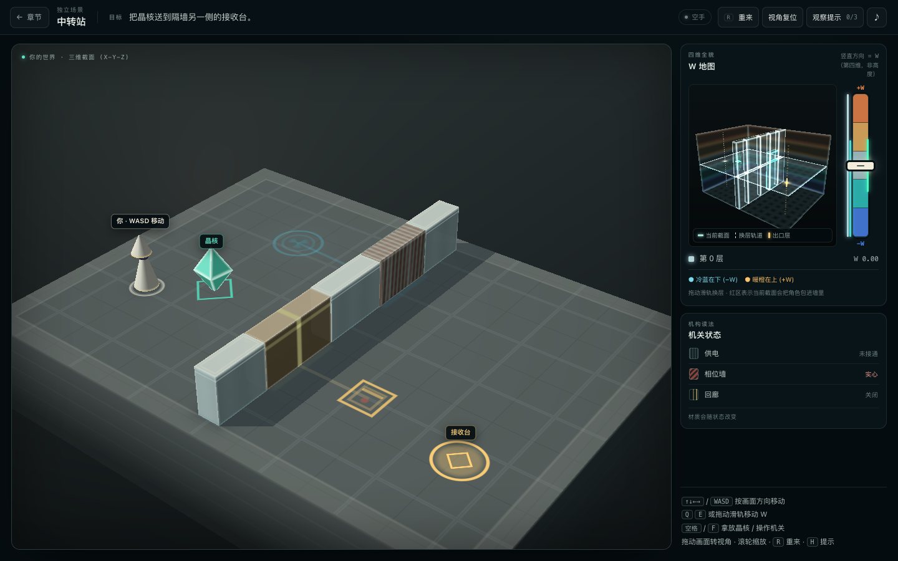
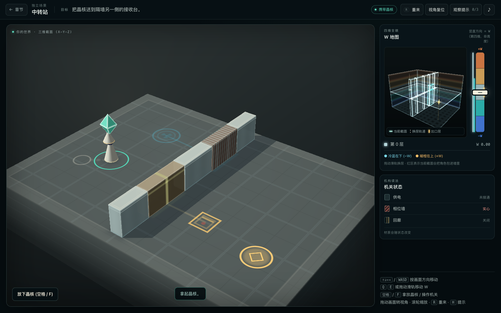
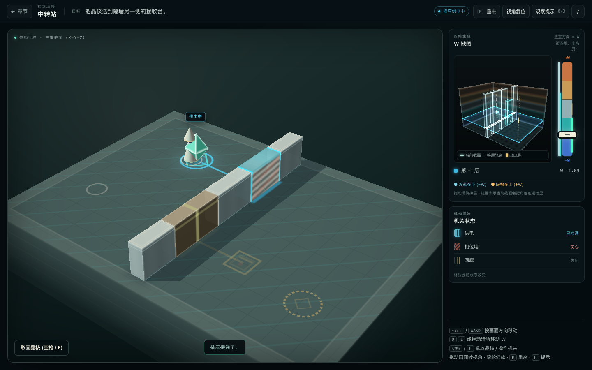
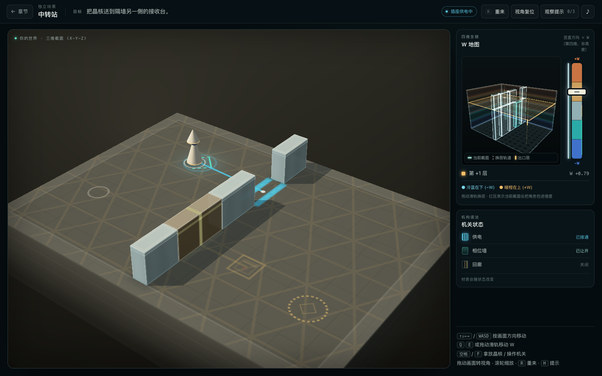
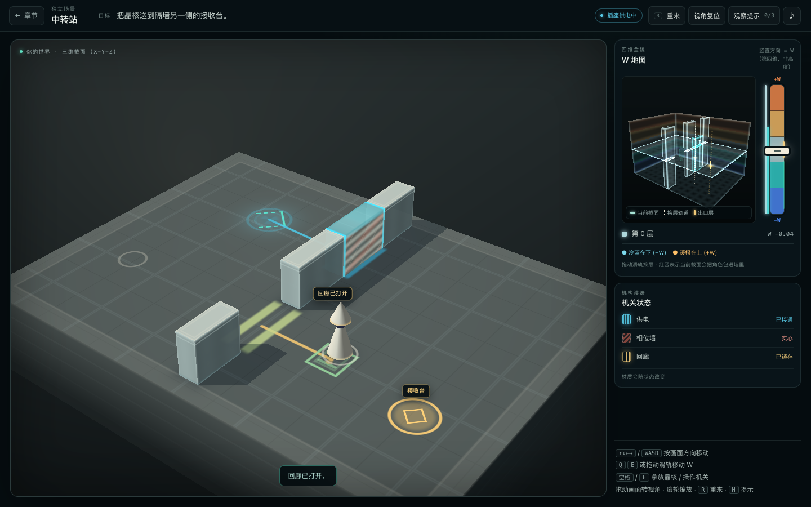
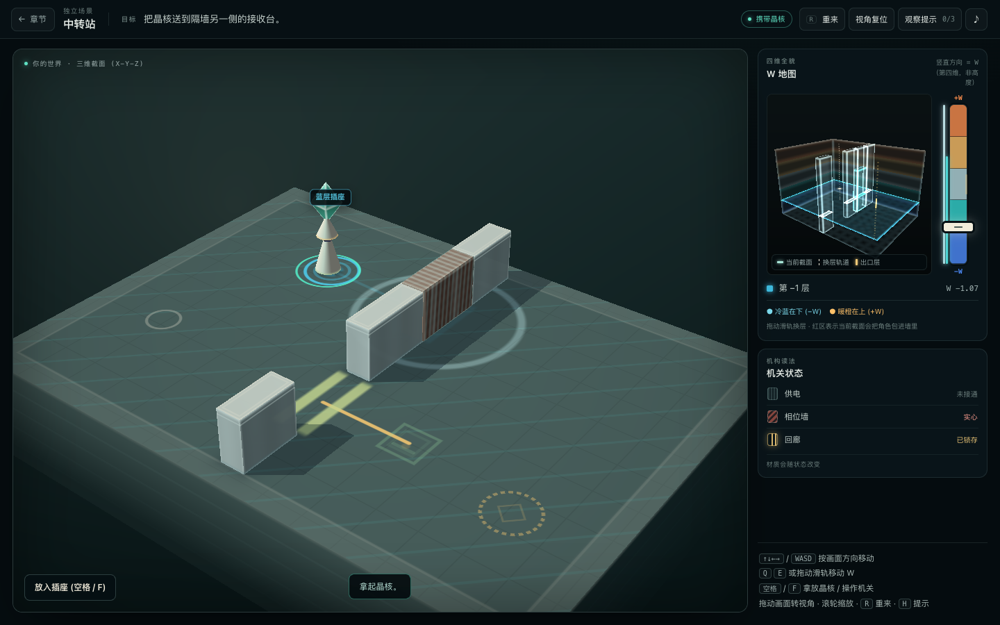
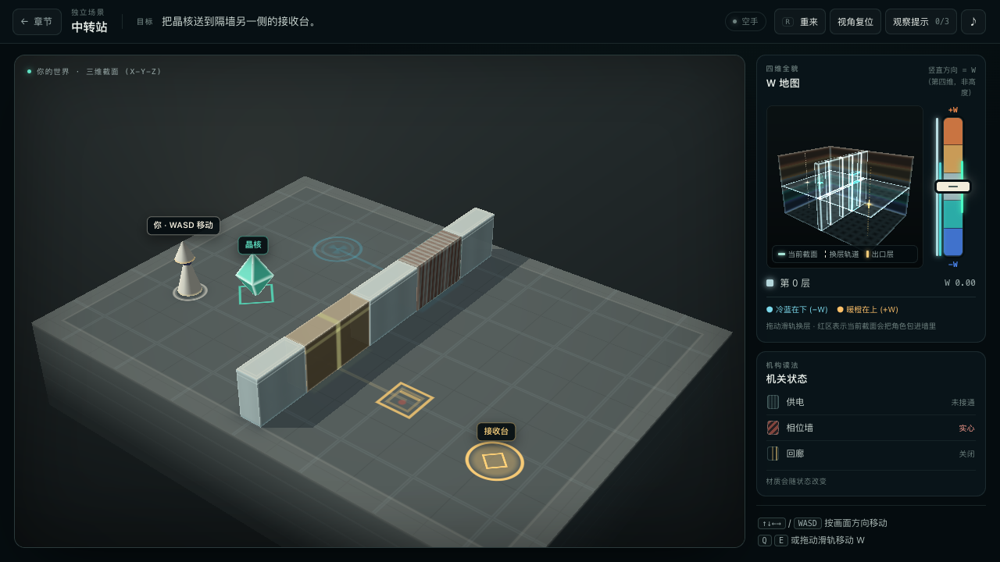
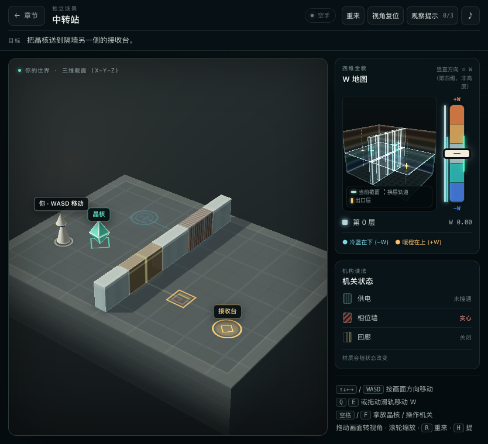

打开原图 ↗01 / 06
初始
W 0.00直接进入中转站关卡。空手，晶核留在左前空地，北门与回廊都还关着。
- 触发
- 打开
?level=station，不经过标题页或状态播放器。 - 画面
- 北门是暗铜门扇；蓝线未亮；金色的接收台在隔墙另一侧。侧栏机构读数为“未接通 / 实心 / 关闭”。
- 碰撞
- 北通路同时被未通电的供电门与同层相位墙封住。晶核仍在远处，尚未进入携带半径。
W / SLICE · 中转站 · FIELD BOARD / 06 STATES
六帧按真实键盘流程连续采集：拿取、送电、换层、锁存、取回。每一帧都保留当时的 W 位置、机关状态和碰撞事实，用来检查材质与因果是否读得出来。
颜色只做辅助；门扇是否出现、墙带是否仍有截面、门槛是否留存，才是碰撞事实。

打开原图 ↗直接进入中转站关卡。空手，晶核留在左前空地，北门与回廊都还关着。
?level=station，不经过标题页或状态播放器。
打开原图 ↗靠近晶核后按空格或 F。晶核跟着角色移动，但角色占的空间也变大了。
0.40（空手 0.22）。北门的两层阻挡都还在，不能靠“拿着东西”挤过去。
打开原图 ↗晶核放入蓝层插座。供电门打开，但同层的相位墙没有消失——供电不等于这一层就能过。
W −2.0 … +0.7 仍有截面；此刻北通路依旧封死。
打开原图 ↗晶核留在插座，角色独自换层。越过相位墙的 W 上界后，北门才真正空出来。
W +0.70；+0.76 已在范围外。供电门仍因插座通电而移除，所以此层可通过。
打开原图 ↗穿过北门后，在另一侧中间层拉开回廊。门扇消失，金色门槛留在地上，之后不再关闭。

打开原图 ↗从回廊返回蓝层取回晶核。供电立即切断，北门重新关闭；回廊是锁存机构，不受断电影响。

